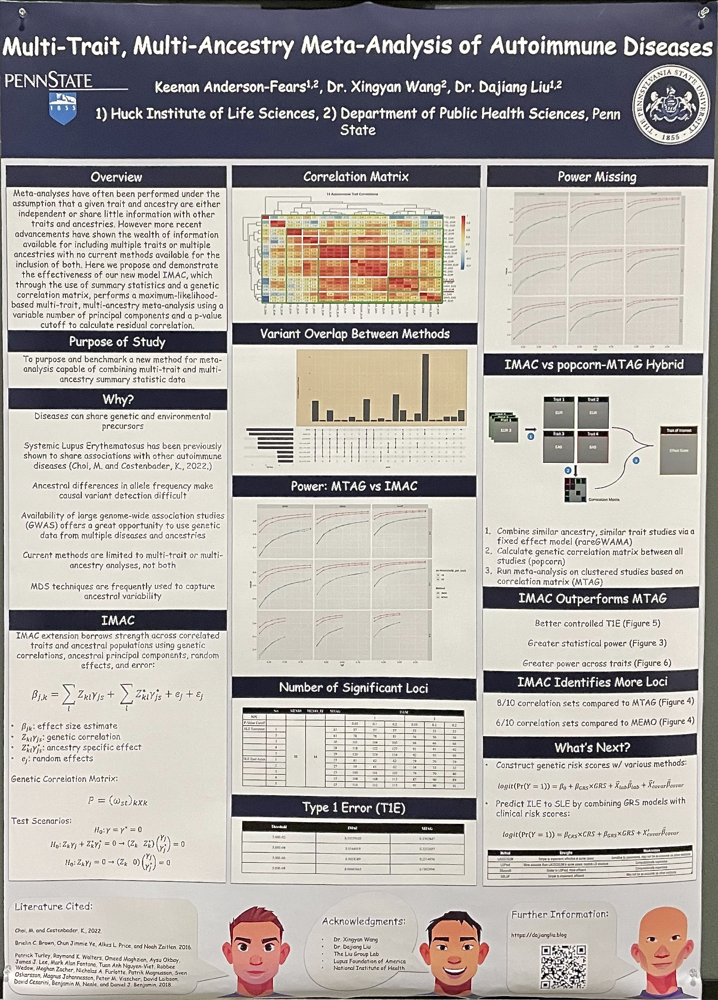
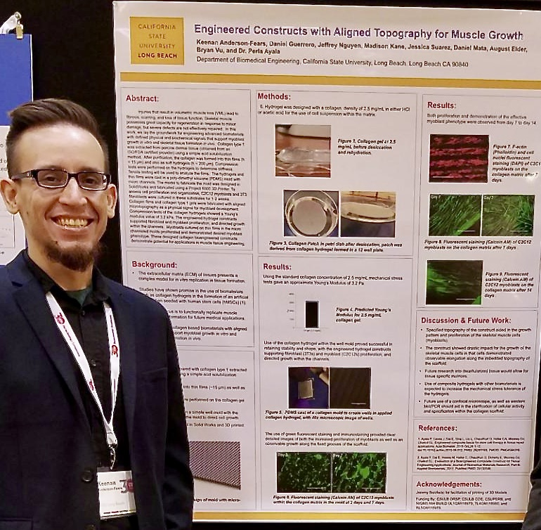

Poster Highlights

Multi-Trait, Multi-Ancestry Meta-Analysis of Autoimmune Diseases (ASHG 2023)
This poster features work from my thesis on the creation,
testing and implementation of a novel method called IMAC. This
method uses a Bayesian, maximum likelihood approach to combine
GWAS summary statistics across both multiple traits as well as
multiple ancestries using a genetic correlaiton matrix and
k-number of principle components of ancestry.

Engineered Constructs with Aligned Topography for Muscle Growth (CSUPRB 2017)
This poster features work from my post-bach in Bioengineering,
focusing on tissue engineering. Using 3D micro-constructs, we were
able to create a collagen and ECM matrix using decellularized pig
cardiac muscle tissue, that contained micro-channels. Using said
tissue constructs we were able to grow HPSCs and induce cardiac
cell development. Our goal being the creation of cardiac muscle
tissue capable of application in the result of cardiac trauma.
Additional Posters Contributed To
- Kibrit, E., Anderson-Fears, K., Mata, D., Ayala, P Dr.. “3D Scaffold Design for Cardiac Repair.” Annual Biomedical Research Conference for Minority Students (ABRCMS). Indianapolis, IN. November 2018. ---
- Kane, M., Mata, D., Nguyen, T., Anderson-Fears, K., Nguyen, J., Vu, B., Ayala, P Dr. “Development of Vascularized Muscle Tissue in Bioengineered Collagen Scaffold.” Annual Biomedical Research Conference for Minority Students (ABRCMS). Indianapolis, IN. November 2018. ---
- Nguyen, J., Padron, K., Anderson-Fears, K., Vu, B., Ayala, P. Dr. “Bioengineered Topographical Scaffolds for Muscle Regeneration.” Biomedical Engineering Society 2018 (BMES) Annual Meeting. Atlanta, GA. October 2018.